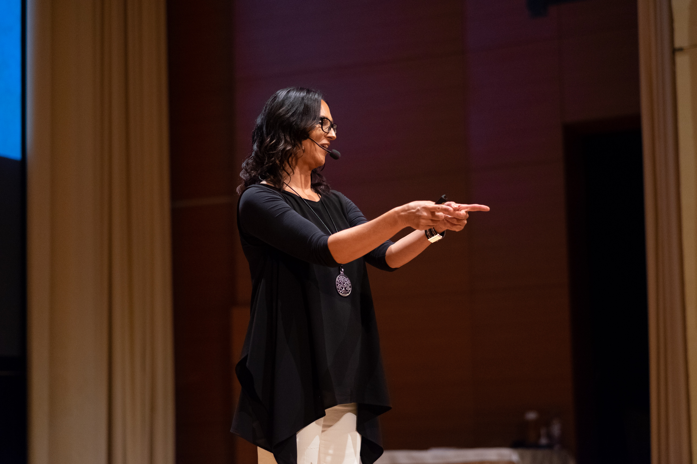

O avtorici
Arhitektka notranje usklajenosti.
Dvajset let prakse. Prva certificirana NCS trenerka v Sloveniji.
Pot
Od mediatorke do arhitektke spremembe.
Tanjina pot se je začela z globokim interesom za človeško komunikacijo. V dveh desetletjih je prerasla iz komunikologinje in mediatorke v eno redkih certificiranih strokovnjakinj za nevroznanost spremembe na slovenskem prostoru.
Doktorski program je zaključila s specializacijo v mediaciji, kjer je pri delu z več kot 1.000 mediacijami ugotovila, da večina konfliktov izvira iz notranje neusklajenosti posameznikov — ne iz zunanjih okoliščin. Ta spoznanje je spremenilo smer njenega dela.
V iskanju učinkovitejših metod je prišla do svetovno uveljavljenih mentorjev: Tonyja Robbinsa, T. Harv Ekerja in Boba Proctorja. Desetletje intenzivnega študija je rezultiralo v lastni sintezi, ki jo danes imenuje Zavestni Kreator.
Prelomnica je prišla leta 2018, ko je začela poglobljeno raziskovati nevroznanost spremembe pri dr. Joeju Dispenzi. Leta 2022 je postala prva in edina certificirana trenerka ter svetovalka organizacije NeuroChange Solutions (NCS) iz Slovenije. Vzporedno je pridobila certifikat HeartMath Inštituta za tehnike srčne koherence.
Danes Tanja deluje na stičišču nevroznanosti, srčne koherence in zavestnega vodenja. Njeno delo je enako relevantno za posameznika, ki išče osebni preboj, kot za direktorja, ki gradi odpornejšo organizacijo.
Mejniki
Pot v številkah in datumih.
Izobraževanje in trening v javnem nastopanju, vodenju in poslovnih pogajanjih za podjetja in ustanove.
Postala certificirana mediatorka. Začetek intenzivne prakse, ki je vodila do doktorske disertacije in knjige Mediacijske tehnike in veščine 1–50.
Desetletje intenzivnega dela z vodilnimi strokovnjaki za osebno preobrazbo. Zbiranje gradnikov za lastno sintezo.
Začetek poglobljenega dela z metodologijo dr. Joeja Dispenze. Proces integracije nevroznanosti v prakso transformacije.
Pridobila licenco za izvajanje licenčnega programa Coherence Advantage. Integracija tehnik srčne koherence v vse programe.
Pridobila licenco organizacije NeuroChange Solutions — edina certificirana trenerka in svetovalka NCS iz Slovenije.
Prvo izvedbo avtorskega retreata Zavestni Kreator je pospremilo 15 udeležencev. Program je od takrat postal flagship ponudbe.
Danes Tanja izvaja tri retreate letno, dela s korporativnimi strankami po vsej Sloveniji in gradi Akademijo notranje usklajenosti.
Metodologija
Zakaj sinteza deluje tam, kjer ena metoda ne zadostuje.
Vsaka od treh metod je učinkovita sama po sebi. Skupaj naslavljajo um, srce in vedenjsko raven spremembe hkrati.
Nevroznanost uma
NeuroChange Solutions deluje na ravni možganskih vzorcev. Prepoznavanje vzorcev reaktivnosti in sistematično preoblikovanje s pomočjo mentalne vadbe.
Koherenca srca
HeartMath deluje na ravni fiziologije. Tehnike srčne koherence v minutah spremenijo biokemično stanje, iz katerega prihajajo odločitve.
Zavestno ustvarjanje
Zavestni Kreator deluje na ravni identitete. Ko prepoznate, kdo ste brez starih vzorcev, postanejo spremembe naravna posledica.
Avtorsko delo
Knjige in publikacije.
Mediacijske tehnike in veščine 1–50
Strokovni priročnik za mediatorje in komunikologinje. Rezultat dveh desetletij prakse in 1.000+ izvedenih mediacij.
Naslednja publikacija v pripravi.
Mediji in nastopi
Nastopi in intervjuji.
V pripravi
Prihajajoci intervjuji in medijski nastopi. Za povpraševanja medijev: pišite nam →
Stopite v stik
Povabite Tanjo na vaš oder ali v vaše podjetje.
Tanja izvaja keynote predavanja, delavnice in korporativne programe po vsej Sloveniji. Za informacije o razpoložljivosti in honorarjih nas kontaktirajte.